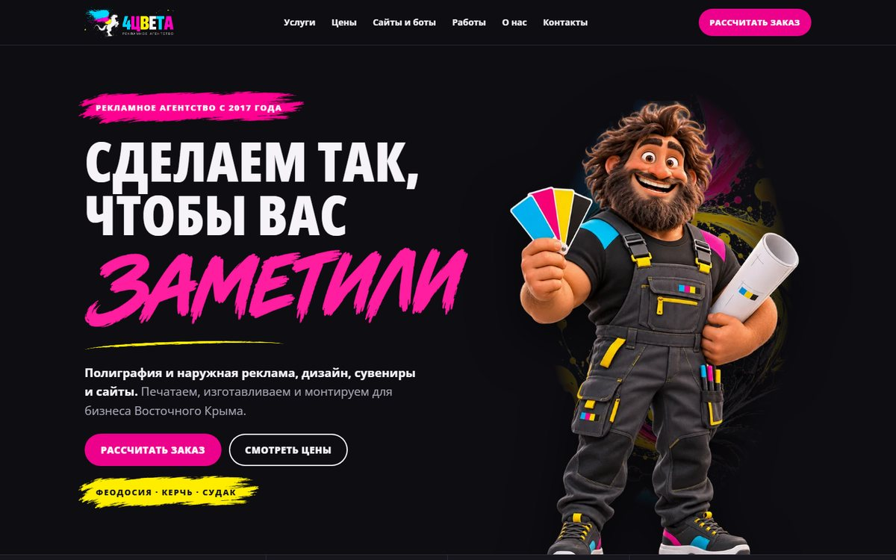

01
Сайт агентства
Витрина, которая отвечает на главный вопрос клиента ещё до звонка: что делают и сколько стоит.
- Все направления: печать, наружная реклама, плёнки, сувениры, сайты и боты
- Таблицы цен по тиражам и материалам
- Кнопка «Рассчитать заказ» ведёт к контактам и в Telegram-бота
- Отдельно продуманная мобильная версия
